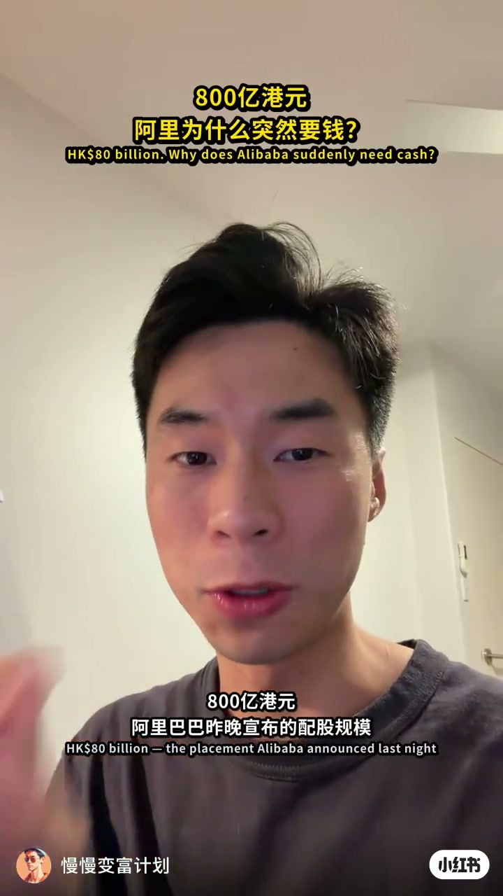
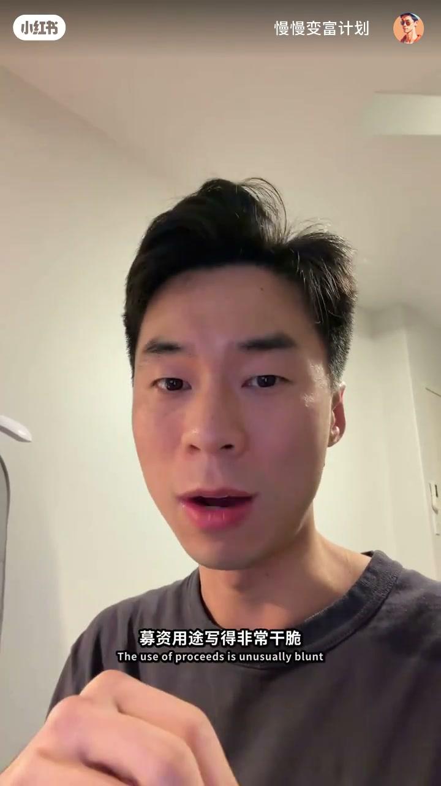
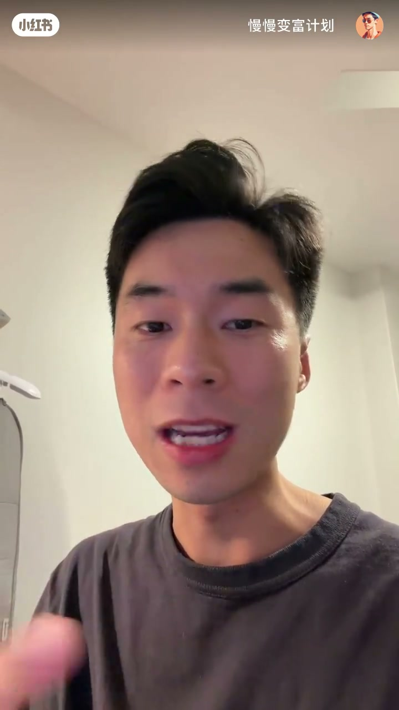
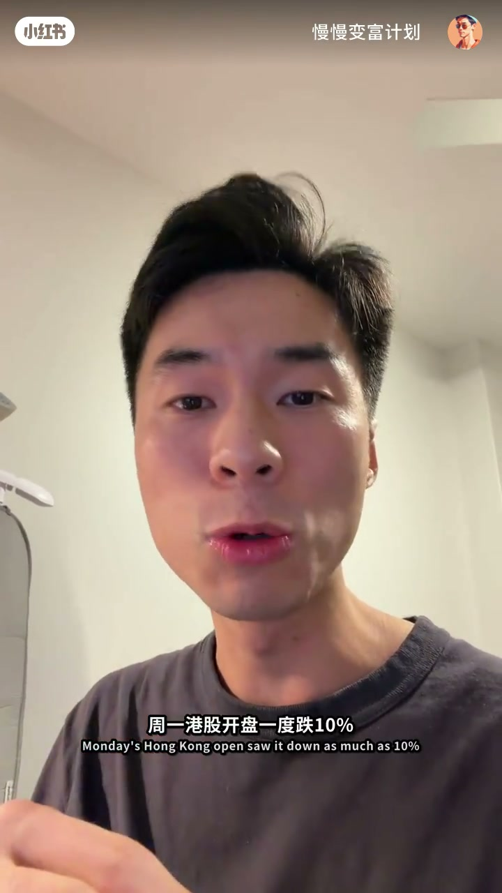
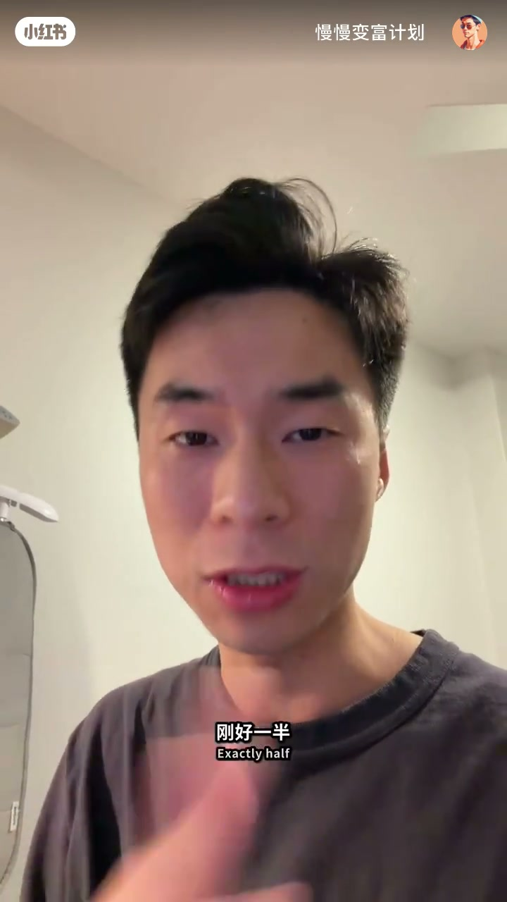
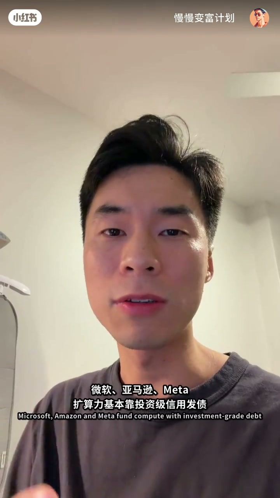
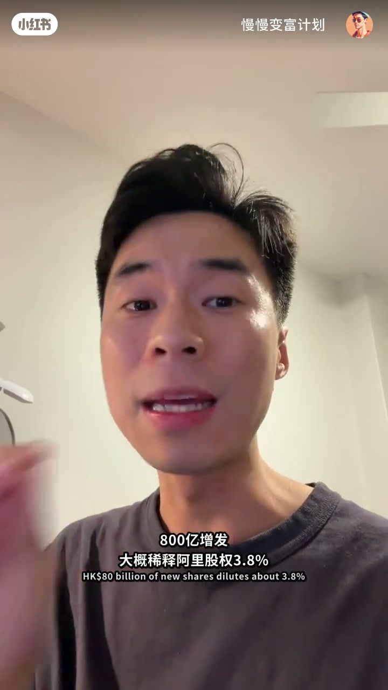
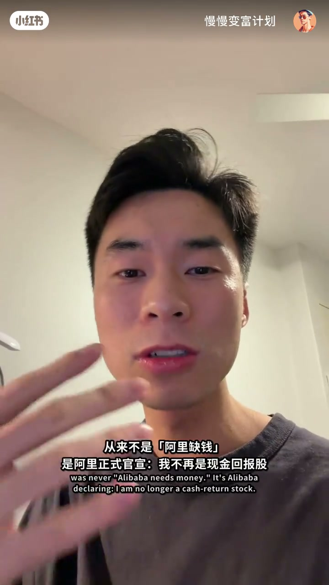

内容要点
8 月 23 日晚，阿里巴巴宣布配售 7.1 亿新股，每股 112.7 港元，募资约 800 亿港元——香港上市公司史上最大的一笔一级市场增发。UP 主用三个问题拆解这场争议：账上明明躺着 465 亿美元现金，阿里为什么要稀释股权？为什么选股权而不是发债？答案分别指向「现金是用来活的不是烧的」、抢 AI 窗口期，以及用股权把电商时代的资产负债表信用，对换成 AI 时代的所有权。最后用高卖低买的回购时间线，说明这笔「挨骂」的配售其实是蔡崇信式的漂亮资本操作。
知识结构
800 亿港元配股为港交所史上最大一级市场增发；阿里上季度资本开支约 740 亿港元，这笔融资只够烧一个季度。
8 月 23 日晚配售 7.1 亿新股、每股 112.7 港元、净募约 797 亿港元；用途 100% 投向 AI 与 AI 基础设施；只面向境外机构，散户无缘。
机构端一小时超额认购、最终需求 280 亿美元（募资近 3 倍）；二级市场港股开盘一度暴跌 10%、最低 110.4 港元跌破配售价。
465 亿美元现金不是拿来烧的，是拿来「活」的；三年 3800 亿投资计划已投一半，还有 1900 亿要花，这次募资只覆盖四成。
谷歌、英特尔、SpaceX、OpenAI、Anthropic 都在抢筹 AI 资金；港股流动性尚可、国际资金看好中国 AI，阿里在别人抢桌子前先坐下。
债有硬性还本付息约束，而 AI 的回报周期不确定；本质是把电商时代的信用对换成 AI 时代的所有权。
2024 年阿里以 ADS 75-80 美元回购 125 亿美元，这次配售价折合 ADS 约 115 美元——高卖低买；800 亿增发稀释约 3.8%，其余跌幅是估值语言切换的代价。
两位老板合计花 1.2 亿港元自购（0.15%），是姿态不是金额；配售等于官宣「我不是现金回报股」，股东结构将换血。
阿里不缺钱，缺的是确定的未来现金流：现金是活命的，不是烧的；募资买的是 AI 窗口期，且股权融资把不确定的回报风险交给了新股东。这场配售稀释约 3.8%，其余下跌来自估值语言从「现金牛」到「增长股」的切换——蔡崇信式的操作是典型的高卖低买。
00:00-00:29两个数字：800 亿港元与一个季度的燃料
视频用数字开场：「先给大家感受一个数字——800 亿港元。这是阿里巴巴昨天晚上宣布的配股规模，是香港上市公司历史上最大的一笔一级市场增发。」在全球排名第三，前面是谷歌和英特尔。
第二个数字更关键：「阿里上个季度的资本开支是 677 亿人民币，差不多 740 亿港元——这笔钱只够阿里花多久？就是一个季度。」一上来就抛出一个尖锐的错位：史上最大融资，只够烧三个月。

00:29-01:08交易结构与一个普通人够不到的配售
8 月 23 日晚，阿里宣布配售 7.1 亿新股，每股 112.7 港元，总额约 800 亿港元，扣除费用后净募约 797 亿。募资用途写得非常干脆：「100% 投向 AI 和 AI 的 infrastructure，没有电商，也没有并购、回购，没有还债。」
这是阿里 2019 年回港上市以来第一次发新股，且只面向美国境外的机构。「翻译成人话就是：你我这种散户基本没有资格参与，只能在二级市场看着。」

01:08-01:44两种心情：机构抢疯了，二级市场跌懵了
市场反应被 UP 主拆成两层。机构那一层：「有资格认购的机构抢疯了，基本上一个小时内已经超额认购，最终需求 280 亿美元，接近募资的三倍。主权基金和长线基金基本拿走了 14 成的额度。」
二级市场完全是另一副面孔：「港股开盘以来一度暴跌 10%，最低 110.4 港元，比 112.7 的配售价还要低——主权基金抢得头破血流，当天就已经浮亏了。」两个市场，两种心情。


01:44-03:12疑问一与二：现金是用来活的，募资买的是窗口期
回到很多人想不通的问题：阿里不缺钱，为什么还要稀释股权？UP 主的第一个观点：「现金不是用来烧的，是用来活的。465 亿美元听起来很多，但阿里去年 2 月定了三年 3800 亿人民币的投资计划，到今年 6 月底已经投了 1900 亿，刚好一半，还有 1900 亿要花。这次募的 800 亿，只够覆盖剩下那部分的四成左右。」
第二个观点把时间维度拉开：「这笔钱买的也不是一个 GPU，是一个窗口期。现在全球投资玩家都在干同一件事——趁市场愿意给钱的时候。谷歌发行募资约 847 亿美元，英特尔增发了 200 亿，SpaceX IPO 之后还发了 250 亿的债，OpenAI 和 Anthropic 预计今年年底或明年上市。港股现在流动性还行、国际资金看好中国 AI，所以阿里在别人来抢桌子之前，先把屁股坐上去。」他顺势点出融资的铁律：「从来不是你需要钱的时候去融，而是市场愿意相信你、愿意给钱的时候去融。」

03:12-03:52疑问三：为什么是股权，而不是债？
最难的一层：美国巨头们（Amazon、Microsoft、Meta）基本靠投资级信用发债，阿里有非常好的资产负债表，为什么选最贵又挨骂的股权融资？
UP 主给出核心逻辑：「因为债是有应约数的——不管 AI 有没有回本，报信都得还钱。而 AI 这种东西，你能确定三年五年后回本吗？所以本质上是把阿里电商时代涨下来的资产负债表的信用，对换成 AI 时代的所有权。这个事情蔡崇信主席可能就觉得，算不是很合得来。」

03:52-05:24一个反直觉的点：这是一笔非常漂亮的生意
骂稀释股权的人可能漏掉了一个关键事实：「2024 年阿里回购了 125 亿美元的股票，当时 ADS 价格在 75 到 80 美元区间；整个 22 年到 24 年，阿里一直在大规模回购。这次配售的价格折成 ADS 大概 115 美元——蔡主席的资本配置能力非常厉害，高卖低买。」
然后他算了一笔账：「800 亿增发稀释了阿里股权约 3.8%，股价却跌了 10%，中间那 6 个点是什么？是一种定性。22 到 24 年的阿里是现金牛：疯狂回购、估值便宜，买它的人买的是价值和股东回报。现在的阿里：单季度资本开支同比增长 75%，利润要掉 75%，现金牛是负的，回购停了，还要发新股——同一家公司，完全不同的估值语言。」


05:24-05:58信号与结语：从现金回报股到 AI 增长股的换血
最后 UP 主提到两位老板的「信心票」：蔡崇信花 8000 万港元买了 72 万股，吴永明花 4000 万买了 35 万股，合计 1.2 亿。「1.2 亿对 800 亿只有 0.15%，不是因为这点钱——这是一个姿态：他们相信现在的阿里非常便宜，而且他们买得比主权基金还便宜。」
收束到核心判断：「这次配售的信号不是阿里缺钱，而是阿里正式官宣——我不是一只现金回报股。原来那批为了便宜和回购来的人要走了，要换成一批看得懂中国算力和 AI 未来的人。股东结构换血，博弈和交接的过程，产生了非常大的波动。」他最后把问题抛给观众：你觉得三年后阿里能回本吗？
完整转录（193段）
以下文本由 Whisper medium 模型自动转录，可能存在少量识别误差，已尽可能修正。
先给大家感受一个数字就是800亿港元
这是阿里巴巴昨天晚上宣布的配股规模
这是香港上市公司历史上最大的一笔
一级市场的增发
没有质疑
今年是排名全球第三的
前面是谷歌还有英特尔
那第二个数字就是
阿里上个季度的资本开支啊
台价是677人民币
差不多是740亿港元
啊香港季度的这个港股利率上
最大的融资只够阿里花多久
就是一个季度
大家可能有个问题就是
阿里其实很多钱
阿里的账上谈的465亿的美元的进现金
这样子一家公司为什么他要稀释自己的股城呢
大概是8月23号晚上阿里就宣布了
配售7.1亿的新股
每股是112.7港元
就是总额是800亿港元左右
那扣除乱七八糟之后
净额可以有797亿的港元募资到
那么他们的募资用图其实也写得非常的干脆
是百分之百投向全占AI和AI的infrastructure
没有电商也没有什么并购啊
回购啊
没有还债
所以是百分之百的AI
这是阿里2019年回赶上市
7年以来第一次配的新股
发行人这个就直面向美国境外的机构啊
翻译成一句人话就说
你我这种散户其实基本没有资格参与的
只能在二级市场就看着
那市场的反应其实分两层
机构那一层就是啊
有资格去认购的那一些机构抢封了
基本上一个小时内这个已经是超而认购了
最终的需求就是280亿的美元
接近他们募资的三倍
储存基金和产线基金基本拿走了
14成的这个额度
那二级市场那一层呢基本是跌懵了
就是周一港股开盘以来一度暴跌10%
最低是110.4港元
比112.7的配售价还要低
也就是说那些储存基金就抢了头破血流
但当天就已经负亏了
两个市场就是基本是两种心情
这是有很多人想不通的那一点吗
阿里不缺钱啊
你有400多亿的美元啊
那我们的就是这个看法就是第一
就是现金它不是用来烧的
是用来活的
其实465亿美元看起来听起来很多
但阿里去年2月其实定了一个
三年3800亿人民币的一个投资计划
到今年6月底了
他们已经投了1900亿了
就是刚好是一半左右
还有1900亿要花
那这次募资的就800亿
只够覆盖剩下那部分的四成左右
你这个公司上上460多亿的美元
其实是在它电商主要被围攻的时候
或者本地亏损
本地生活亏损更大的时候
甚至是行业周期要翻脸的时候
撑住那口气不可能是一口气
全部压进一个三年四年
甚至十年才能回本的一个赛道
赢了你就封神
输了你就没有第二次机会了
然后第二就是这笔钱买的也不是一个GPU
其实是一个窗口期
现在全球投资玩家都在干同一件事情
趁市场愿意给钱的时候
其实你看谷歌就是一篮子
就发行了募资847亿左右的美元左右的这样一个金额
英特尔增发了200亿
SpaceX IPO之后还发了250亿的债
而OpenAI和Anthropic预计是今年
年底或者明年就要上市
那什么概念就是全球的AI主题的钱
都会被这两个巨无霸吸走一大块
那港股现在的流动性其实是OK的
然后国际资金也看好中国的AI
所以阿里在别人来抢桌子之前
就先把屁股坐上去
这也是合情合理的
那融资这件事情的规律从来不是就是
你需要钱的时候去融
是在市场愿意相信你
愿意给钱的时候才去融才能
那第三个也就是最难的一点
为什么是股权而不是债呢
是美国那批巨头对吧
Amazon Microsoft还有Meta
他们就基本都是靠投资级的信用来发债
阿里明明有非常好的资本负债表
其实为什么他们要选这种最贵
而且装骂的用股权融资呢
因为债是有应约数的
就是不管AI有没有回本报信都得还钱
而AI上帝这种东西
你能确定三年五年后能回本吗
对不对
所以本质上是把阿里电商时代
涨下来的资产负债表的信用
对换成AI时代上帝的所有权
那这个事情蔡崇信主席可能就觉得
算不是很合得来
那还有一个非常反直觉的点
这其实是一笔非常非常漂亮的生意
就是骂息事股权的人可能没有注意到一点
就是2024才年
阿里其实回购了125亿美元的股票
当时他们ADS的价格是多少
是75块到80块美元这个区间
那整个22年到24年之间
阿里一直在回购大手臂的回购
最猛的一个就是记录
我记得是花了58亿美元
那这次配售的价格
打成ADS大概就是115
大家能看懂啊能听懂啊
就是蔡主席的资本配置能力非常厉害
就是高卖低买
就是可以算一下
800亿增发了之后
大概是稀释了阿里股权的百分3.8
股价要跌10%
那中间的百分6点几是个什么东西
其实是一种定性
就是22年到24年之间
其实阿里是一直什么样的股票呢
它是一个现金牛
阿里封还的回购
然后估值非常便宜
买它的人买的是这种价值
还有股东回报
就是他们的mindset是这个东西
那现在阿里是什么东西
阿里单器的资本开支是
同比增长75%的
就是他们的利润要掉75%
他们的现金牛是负的
回购根本是停了
然后现在还要开始发新股
同一家公司是完全不同的估值语言
所以这次配售的信息就是
不是阿里缺钱
而是阿里正式官宣
我不是一只现金回报股
对吧
就是我不是老灯鼓
你就要用小灯的心情去看它
意味着股东结构就要换血
原来那批为了便宜
还有回购的人他们要走了
要换成一批
就是看得懂中国算力
和AI未来的人才会进来
所以就是博弈和交接的过程
产生了非常大的波动
那两位老板蔡崇信是
今天8000万
敢源买了72万股
然后吴永明是
4000万敢源买了35万股
加起来是1.2亿
就是信心票
你把数字看一下
1.2亿vs800亿
其实就很少
就是0.15个
不是就是
因为这么一点钱就不表示
这是一个姿态
就是他们相信
非常便宜现在阿里
而且他们买的比那些主权基金还要便宜
他们认购价是低于112.7元
上述的这些资料判断
不够成为投资建议
最后的问题就是
你觉得三年后阿里能回本吗
就是或者你信不信
那评论区见
谢谢